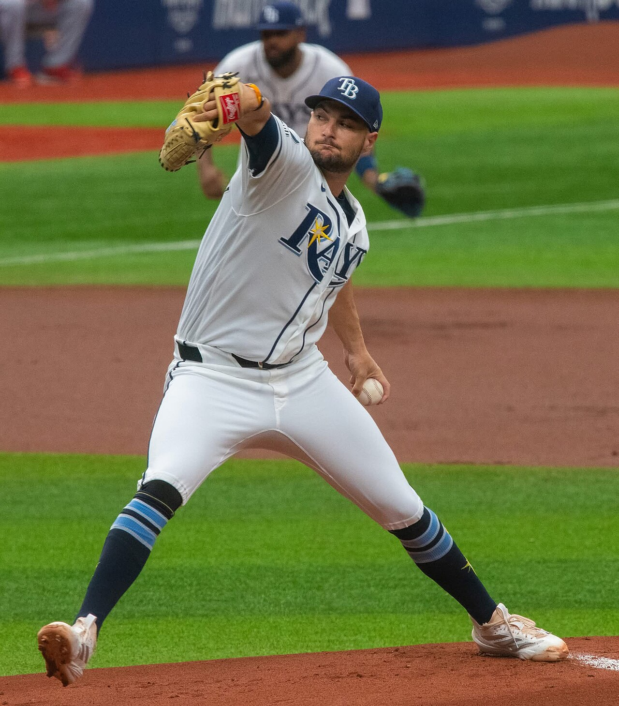
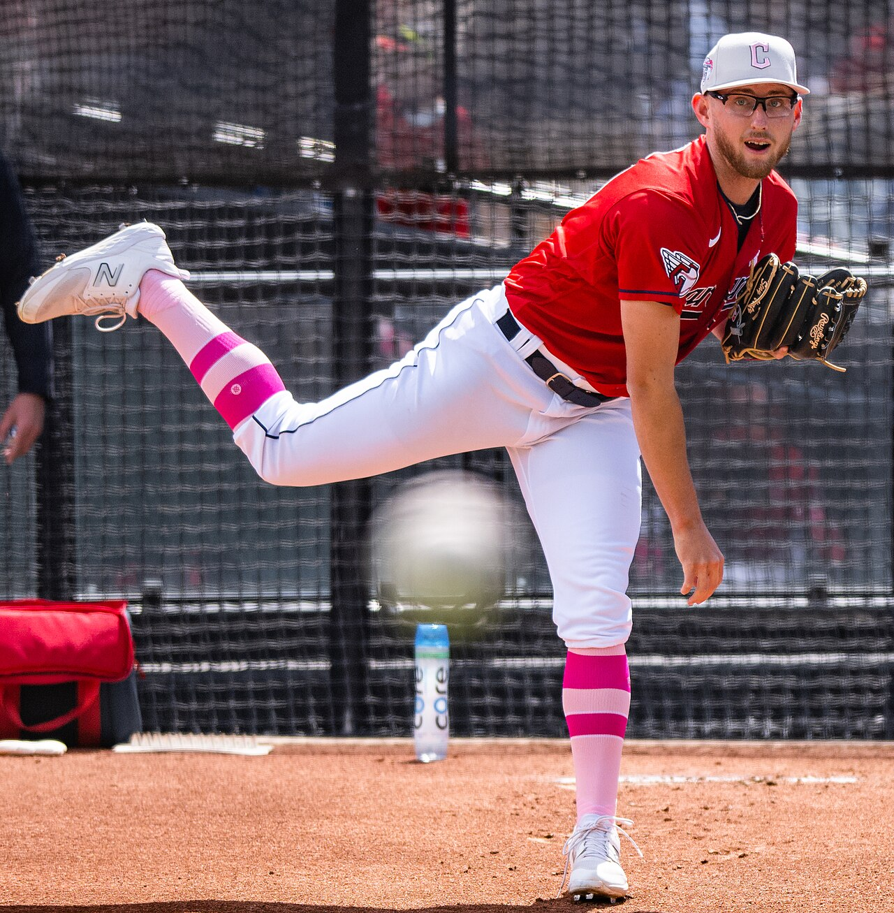

Eighteen point six percent of tonight's Athletics at Astros game lives in one outcome: Houston wins, and Houston wins by exactly one run. On the standard -1.5 run line that slice is a loss. On the alternate -1, it is a push and the money comes back. Tonight's card paid 75 cents of price to move between those two worlds.
That is the whole piece. Four plays are posted, 5.5 units are at risk, and the biggest of them sits on a number most bettors never scroll far enough down the page to find.
| Play | Odds | Stake | Game |
|---|---|---|---|
| Tampa Bay Rays moneyline | -126 | 1 unit | TB at BAL, 7:05 PM ET |
| Houston Astros run line -1 (alternate) | -180 | 2 units | ATH at HOU, 7:10 PM ET |
| Detroit Tigers team total under 4.5 | -139 | 1.5 units | DET at KC, 7:15 PM ET |
| Cleveland Guardians moneyline | -137 | 1 unit | CLE at COL, 8:10 PM ET |
Four positions, logged on the BetLegend record at TrustMyRecord as tickets 4631 through 4634 at those exact prices. Fifteen games are on the schedule today and eleven of them are being passed. Read the Houston line carefully, because the number is -1.0 and not -1.5. Houston has to win by two or more for it to cash, and a one run Houston win is a push. Not a win, not a loss, stake returned.
Three prices describe the same game from three different distances. Houston is -240 on the moneyline. Houston is -105 on the standard -1.5 run line. Houston is -180 on the alternate -1. Those numbers are not independent of each other, and if you strip the juice out of the first two you can back into what the market actually believes.
Start with the moneyline. Houston at -240 implies 70.59 percent, the Athletics at +195 imply 33.90 percent, and the two add to 104.49 percent because the book keeps the difference. Normalize and Houston's honest win probability is 67.56 percent.
Do the same on the run line. Houston -1.5 at -105 implies 51.22 percent, the Athletics +1.5 at -115 imply 53.49 percent, and the pair sums to 104.71. Normalized, Houston winning by two or more is 48.92 percent.
Subtract. Houston wins 67.56 percent of the time and clears -1.5 in 48.92 percent of the time, so the difference of 18.64 percent is the exact one run band. That is the push probability, derived from prices the book published itself.
The card paid -180. Break even at -180 is 64.29 percent. The market's own implied fair number on that same alternate line is 60.12 percent. The gap is roughly four points of probability, which is a fat hold even by alternate line standards.
Alternate lines are where books earn quietly, because the number reads friendlier than the standard one and nobody does the subtraction. Moving from -1.5 at -105 to -1.0 at -180 costs 75 cents in exchange for insurance against a single band of outcomes. Whether that trade is any good depends entirely on whether the market has the width of that band right.
Here is the case that it does not, and it starts with how few innings Houston's starter actually throws.
Hunter Brown has made 13 starts and thrown 68.2 innings this season. That is 5.28 innings per outing. He strikes out 9.44 per nine, the highest rate of any starter on this card, and he has walked 40 in those 68.2 innings, a rate of 5.24 per nine that is also the highest on the card. Both things are true at the same time. He misses bats, and he runs his own pitch count up doing it.
What follows him matters more than what he does. Houston has allowed 629 runs in 129 games, 4.88 per game, which is not a run prevention machine by any reading. The Astros are 65-64. This is a .504 club laying two runs, and the market has it at -240 mostly because of who is standing in the other dugout.

Shane McClanahan, the Rays starter tonight in Baltimore, carries a 1.12 WHIP across 102.1 innings this season.
The Athletics are 49-80 and have lost five straight. They have allowed 746 runs, 5.78 per game, and that figure is genuinely awful. Their offense is a different story. Oakland has scored 557 runs in 129 games, 4.32 per game, which is not far off Houston's own 4.55. Jacob Lopez takes the ball with a 5.22 ERA and a 1.53 WHIP, and the second of those is the number that matters for a run line. A 1.53 WHIP means traffic, and traffic against a Houston bullpen that has to cover four innings is how a six run lead becomes a two run lead and how a three run lead becomes one.
Roughly one MLB game in five ends by exactly one run over the long haul. The market says this one is 18.6 percent. In a game where the favorite's starter averages 5.28 innings and the underdog still scores 4.32 per game, that estimate looks a shade light, and every point it is light is a point of value sitting inside the push.
Honesty means printing the number that disagrees. The ATLAS v1 team total model projects Houston for 6.24 runs tonight, the highest home projection anywhere on the fifteen game board. A club projected past six runs against a staff bleeding 5.78 per game is a club the model expects to win comfortably, and comfortable wins have no use for push protection. If that projection is right, the correct ticket was -1.5 at -105 and the 75 cents was wasted.
Both things can be true. A 6.24 run projection has a wide distribution around it, the Athletics are not getting shut out at 4.32 per game, and a bullpen protecting a lead for four innings is exactly where variance lives. The position buys the insurance. The model would have taken the cheaper number. That disagreement is worth stating plainly instead of hiding it behind the parts of the argument that agree.
Tampa Bay at -126 is the cleanest thing on the card. The Rays are 76-52, the best record of any of the eight clubs playing in these four games, and Shane McClanahan carries a 3.25 ERA and a 1.12 WHIP through 102.1 innings. Brandon Young has been fine for Baltimore at 3.52, but his 1.35 WHIP and his 15 home runs allowed in 117.2 innings are both worse than McClanahan's marks, and the Orioles are 62-67 with a minus 34 run differential.
The interesting part is the price. Bovada has Tampa at -132 this morning. The card is on at -126. Six cents sounds like nothing, but -132 needs 56.90 percent to break even and -126 needs 55.75, so the shop recovered 1.15 points of implied probability before a pitch was thrown. On Cleveland the gap is wider. Bovada shows the Guardians at -145, the card is on at -137, and that is 59.18 against 57.81, or 1.37 points recovered.
Straight talk on Cleveland anyway. Devig the Bovada pair of -145 and +122 and the market's honest opinion of the Guardians is 56.78 percent, still under the 57.81 the card needs at -137. Beating the screen price is not the same thing as beating the market. This ticket needs the market to be wrong about Tanner Bibee, not merely marked up.

Bibee is 4-13 with a 4.01 ERA and a 1.15 WHIP. The record and the peripherals are telling different stories.
It might be. Bibee is 4-13, which looks like a disaster and mostly is not one. A 4.01 ERA on a 1.15 WHIP describes a pitcher whose lineup and bullpen have failed him, and Cleveland's 516 runs scored is the lowest total of any club playing tonight. The warning sign is the 25 home runs he has allowed across 150.1 innings, and the venue is Coors Field. Gabriel Hughes counters at 0-4 with a 6.69 ERA in seven starts, and Colorado is 50-78, has lost four straight, and has allowed 742 runs.
The Detroit team total under 4.5 at -139 is the thinnest play on this board by the arithmetic, and it deserves to be labeled that way rather than dressed up. Detroit has scored 579 runs in 128 games, 4.52 per game, essentially sitting on the line itself. The ATLAS model projects the Tigers for 4.40. Run a negative binomial on a 4.40 mean with the overdispersion MLB team scoring actually shows and four runs or fewer comes back at 57.1 percent. Break even at -139 is 58.16 percent. The price is through the model, not under it.
What a team total model cannot see is the starter. Drew Anderson has thrown 76.1 innings across only five starts, which makes him a swingman rather than a rotation piece, and Detroit has lost three in a row. Michael Wacha has the opposite profile at 155.2 innings in 25 starts with a 3.58 ERA and a 1.15 WHIP, and Kansas City has won six straight. Wacha has also surrendered 21 home runs, more than any pitcher throwing in these four games, which is exactly how a team total under dies on one swing.
Five and a half units across four games. One unit on a 76-52 club at a shopped price. Two units on an alternate run line that converts a one run win from a loss into a push. One and a half on a team total priced through its own projection. One on a starter whose record lies about him, in the one park in baseball built to punish the flaw he does have.
The two unit play is the one that gets argued about tomorrow. If Houston wins by four, nobody remembers what the number cost. If Houston wins by one, that 75 cents comes back looking like the smartest decision on the card. And if the Athletics win outright, the number never mattered at all.
Fact manifest
- The four posted positions with exact prices and stakes: Rays moneyline -126 for 1 unit, Astros alternate run line -1 at -180 for 2 units, Tigers team total under 4.5 at -139 for 1.5 units, Guardians moneyline -137 for 1 unit, tickets 4631 through 4634, 5.5 units total
- BetLegend card for August 22, 2026 as posted to the TrustMyRecord ledger. These are entry prices on positions taken, not a live price feed
- Bovada prices for August 22, 2026: Rays at Orioles ML TB -132 and BAL +110 with the game total 8.0; Athletics at Astros ML ATH +195 and HOU -240, run line HOU -1.5 at -105 and ATH +1.5 at -115, alternate spread HOU -1.0 at -180 with HOU -2.0 at +115, HOU -2.5 at +145 and HOU -3.0 at +190, game total 8.0; Tigers at Royals ML DET -110 and KC -110 with the game total 8.5; Guardians at Rockies ML CLE -145 and COL +122 with the game total 11.0
- Bovada odds feed, pulled this session on 2026-08-22
- Standings through games of August 21, 2026: Rays 76-52; Orioles 62-67 on 579 scored and 613 allowed; Athletics 49-80 on 557 and 746 with a five game losing streak; Astros 65-64 on 587 and 629; Tigers 61-67 on 579 and 500 with a three game losing streak; Royals 56-74 on a six game winning streak; Guardians 63-66 on 516 and 531; Rockies 50-78 on 612 and 742 with a four game losing streak
- MLB Stats API standings endpoint, 2026 season, pulled this session
- Probable starters and 2026 season lines: Shane McClanahan 9-6, 3.25 ERA, 1.12 WHIP, 102.1 IP in 21 starts; Brandon Young 9-3, 3.52 ERA, 1.35 WHIP, 117.2 IP in 21 starts with 15 home runs allowed; Jacob Lopez 5-4, 5.22 ERA, 1.53 WHIP, 88.0 IP in 17 starts; Hunter Brown 3-3, 3.67 ERA, 1.30 WHIP, 68.2 IP in 13 starts with 72 strikeouts and 40 walks; Drew Anderson 4-4, 4.01 ERA, 1.30 WHIP, 76.1 IP in 5 starts; Michael Wacha 6-8, 3.58 ERA, 1.15 WHIP, 155.2 IP in 25 starts with 21 home runs allowed; Tanner Bibee 4-13, 4.01 ERA, 1.15 WHIP, 150.1 IP in 26 starts with 25 home runs allowed; Gabriel Hughes 0-4, 6.69 ERA, 37.2 IP in 7 starts
- MLB Stats API probable pitchers hydrate on the 2026-08-22 schedule plus 2026 season pitching splits for each listed player, pulled this session
- Fifteen game schedule for August 22, 2026 with first pitch times in Eastern, including Rays at Orioles 7:05, Athletics at Astros 7:10, Tigers at Royals 7:15 and Guardians at Rockies 8:10
- MLB Stats API schedule endpoint for 2026-08-22, pulled this session
- Devig outputs: Houston moneyline 67.56 percent, Houston -1.5 at 48.92 percent, an exact one run Houston win at 18.64 percent, and a fair price on the alternate -1 of 60.12 percent or about -151 against the -180 paid. Tampa fair 54.44 percent against a 55.75 break even at -126 and a 56.90 break even at the screen price of -132. Cleveland fair 56.78 percent against a 57.81 break even at -137 and a 59.18 break even at the screen price of -145
- Direct arithmetic on the Bovada prices listed above, using two way proportional normalization. That normalization is a convention and not a measurement
- Detroit team total math: 4.52 runs per game on 579 in 128 games, an ATLAS v1 projection of 4.40 runs, and a 57.1 percent chance of four runs or fewer from a negative binomial with mean 4.40 and variance 1.6 times the mean, against a 58.16 percent break even at -139
- Standings arithmetic, the ATLAS v1 team total model run for 2026-08-22, and a distribution calculation run this session. The 1.6 overdispersion factor is a standard approximation for MLB team run scoring and is not fitted to Detroit
- ATLAS v1 team total model output for August 22, 2026: Houston projected 6.24 runs, the highest home projection on the board; Tampa Bay 4.69; Detroit 4.40; Cleveland 5.53 at Coors Field. The model separately flagged Milwaukee under 4.5 at -145, Texas under 4.5 at -125 and Los Angeles under 4.5 at -115 at an edge of 0.25 or better, none of which are on this card
- ATLAS v1 team total model, run for 2026-08-22 with all QA checks passing and four lineup-not-yet-confirmed downgrades
- Shane McClanahan photograph dated June 23, 2026, and Tanner Bibee photograph
- Wikimedia Commons, CC0 and CC BY 2.0 by Erik Drost respectively, mirrored into the Sports Betting Prime image library and verified live at their published addresses this session
The plays, their prices and their stakes are the author's own posted positions. They record bets taken, not a price feed, and books may show different numbers at the time you read this.
What is not checked, and cannot be:
- No ticket count or money percentage split was pulled for any game on this board. Nothing here describes where public or professional money went. Sports Betting Prime stopped publishing consensus data on July 21, 2026 and has not resumed it.
- No line movement history was pulled. Every price shown is either an entry price on a position or a single Bovada snapshot taken this morning. No claim is made about where any number opened.
- Lineups had not posted when this was written. Late scratches, bullpen availability, rest days and weather all postdate this page.
- The devig assumes proportional normalization. Books do not always split their hold evenly between two sides, and favorite heavy markets often carry more of it on the favorite, which would make the Houston estimates on this page slightly generous.
- The one game in five figure for one run finishes is a long run league rate. It is not a 2026 measurement and not a Houston specific one.
- Coors Field is referenced qualitatively. No park factor was calculated or applied to any number here, including the Cleveland projection.
- No bullpen usage, rest or availability data was pulled for Houston or anyone else, despite the bullpen being central to the argument above.
- Drew Anderson's role tonight is taken from the probable pitchers feed. Five starts inside 76.1 innings says swingman, and whether Detroit plans a short outing behind him is not published anywhere and is not estimated here.